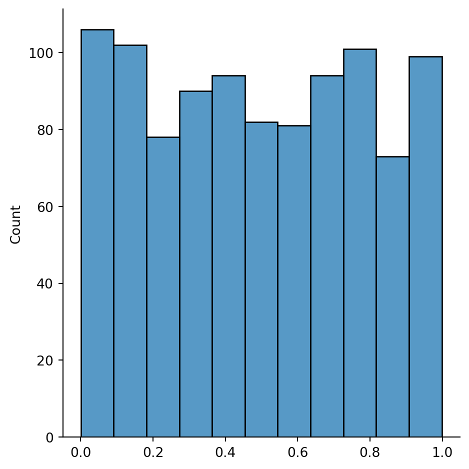
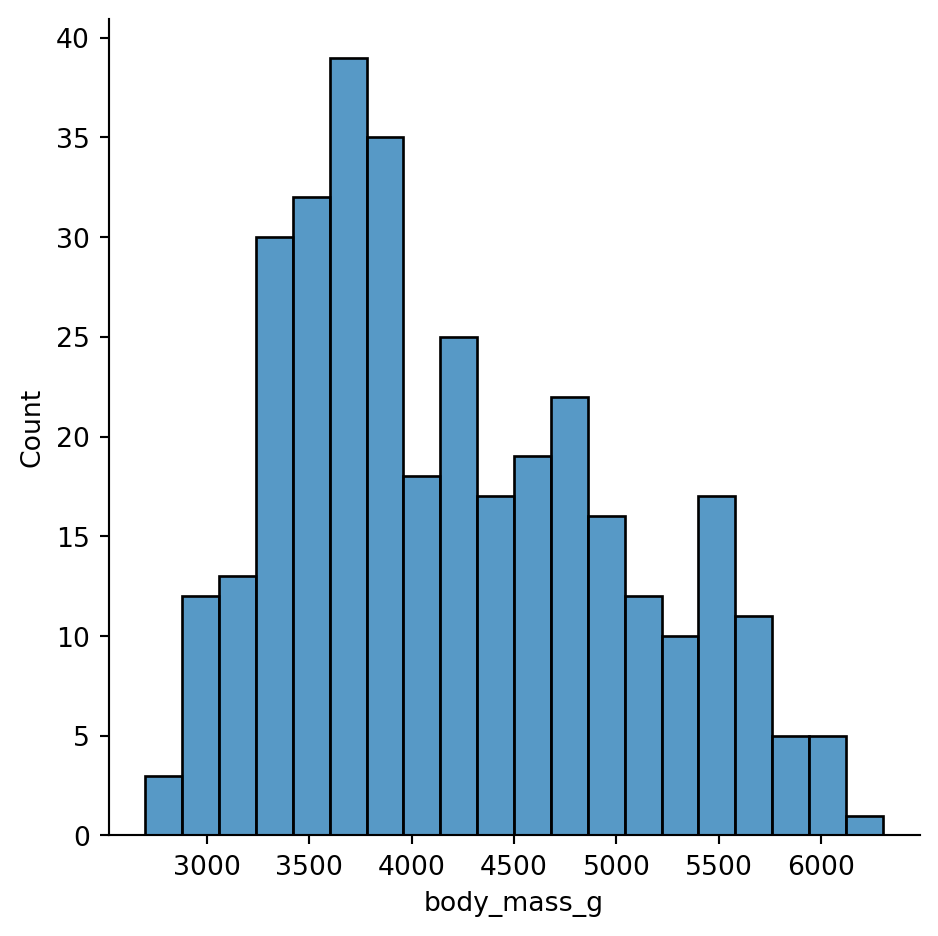
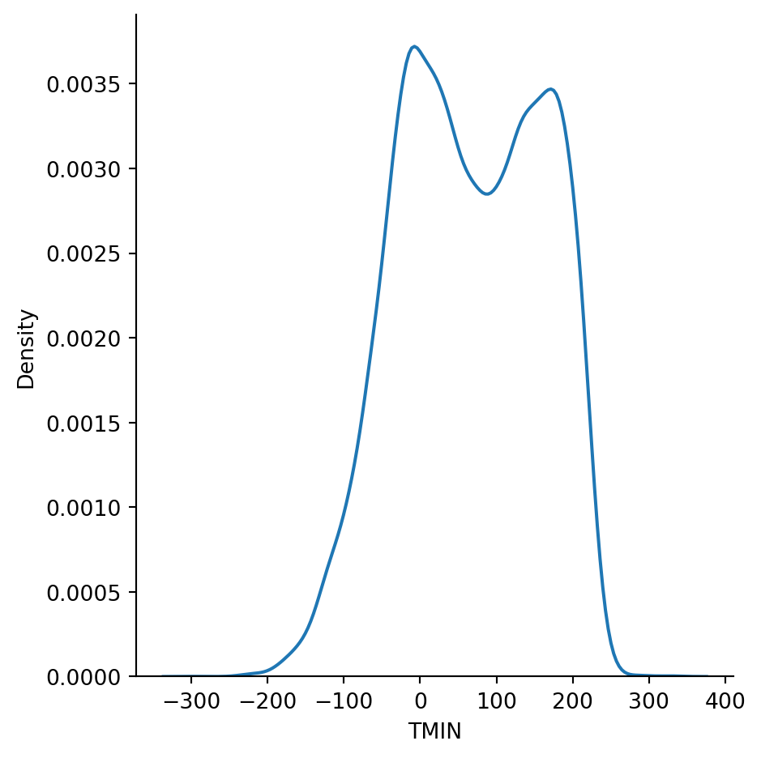
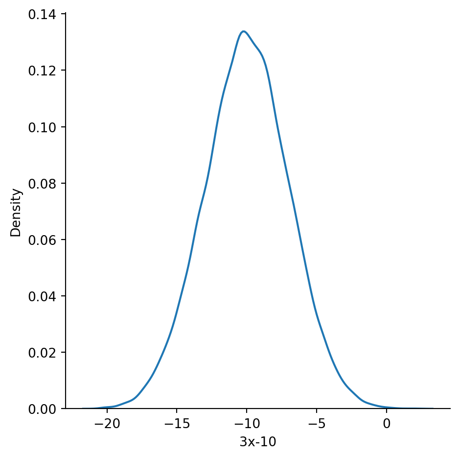
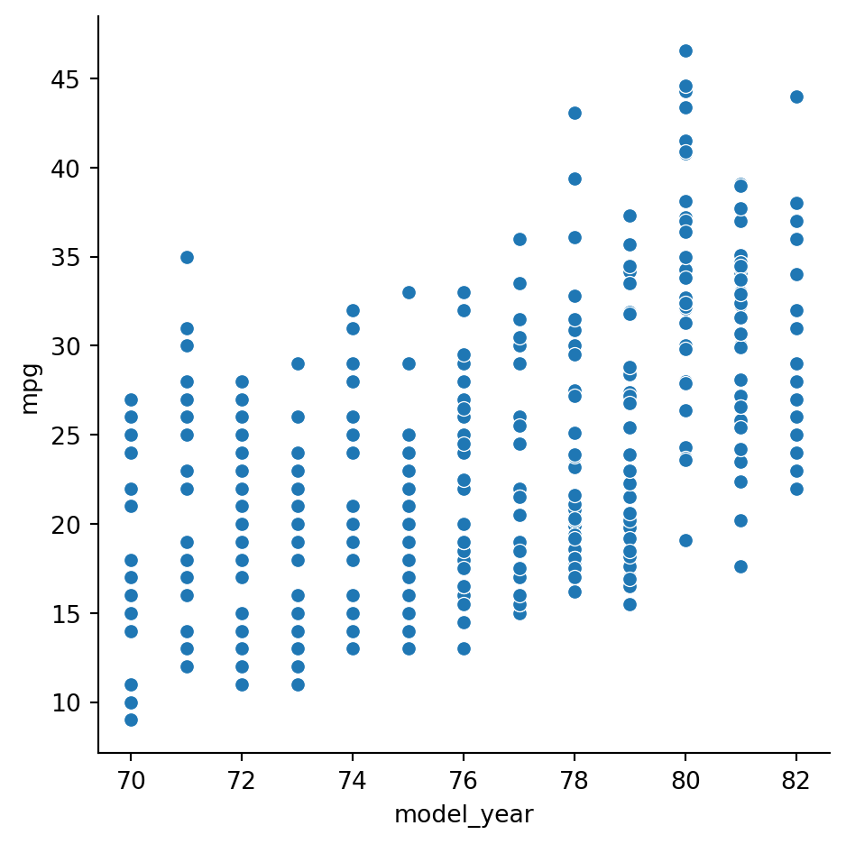

import seaborn as sns2 Descriptive statistics
\[ \newcommand{\float}{\mathbb{F}} \newcommand{\real}{\mathbb{R}} \newcommand{\complex}{\mathbb{C}} \newcommand{\nat}{\mathbb{N}} \newcommand{\integer}{\mathbb{Z}} \newcommand{\bfa}{\mathbf{a}} \newcommand{\bfe}{\mathbf{e}} \newcommand{\bfh}{\mathbf{h}} \newcommand{\bfp}{\mathbf{p}} \newcommand{\bfq}{\mathbf{q}} \newcommand{\bfu}{\mathbf{u}} \newcommand{\bfv}{\mathbf{v}} \newcommand{\bfw}{\mathbf{w}} \newcommand{\bfx}{\mathbf{x}} \newcommand{\bfy}{\mathbf{y}} \newcommand{\bfz}{\mathbf{z}} \newcommand{\bfA}{\mathbf{A}} \newcommand{\bfW}{\mathbf{W}} \newcommand{\bfX}{\mathbf{X}} \newcommand{\bfzero}{\boldsymbol{0}} \newcommand{\bfmu}{\boldsymbol{\mu}} \newcommand{\TP}{\text{TP}} \newcommand{\TN}{\text{TN}} \newcommand{\FP}{\text{FP}} \newcommand{\FN}{\text{FN}} \newcommand{\rmn}[2]{\mathbb{R}^{#1 \times #2}} \newcommand{\dd}[2]{\frac{d #1}{d #2}} \newcommand{\pp}[2]{\frac{\partial #1}{\partial #2}} \newcommand{\norm}[1]{\left\lVert \mathstrut #1 \right\rVert} \newcommand{\abs}[1]{\left\lvert \mathstrut #1 \right\rvert} \newcommand{\twonorm}[1]{\norm{#1}_2} \newcommand{\onenorm}[1]{\norm{#1}_1} \newcommand{\infnorm}[1]{\norm{#1}_\infty} \newcommand{\innerprod}[2]{\langle #1,#2 \rangle} \newcommand{\pr}[1]{^{(#1)}} \newcommand{\diag}{\operatorname{diag}} \newcommand{\sign}{\operatorname{sign}} \newcommand{\dist}{\operatorname{dist}} \newcommand{\simil}{\operatorname{sim}} \newcommand{\ee}{\times 10^} \newcommand{\floor}[1]{\lfloor#1\rfloor} \newcommand{\argmin}{\operatorname{argmin}} \newcommand{\E}[1]{\operatorname{\mathbb{E}}\left[\mathstrut #1\right]} \newcommand{\Cov}{\operatorname{Cov}} \newcommand{\logit}{\operatorname{logit}} \]
When confronted with a new dataset, it’s crucial to get a sense of its characteristics before attempting to draw conclusions or predictions from it.
One of the fastest ways to become familiar with a data set is to visualize it. Python has many graphics packages with different niches. The most widespread is Matplotlib, which is fairly low-level in the sense that you must explicitly specify most aspects of how the plots will look.
We will make extensive use of seaborn, which is built on top of Matplotlib. It’s meant to be used at a higher level, i.e., letting you describe what you want to see and making it look pretty good. (It is possible to customize seaborn plots using Matplotlib commands, but we won’t need much of that.)
There are three major plot types within seaborn:
displot- How values of a single variable are distributed.
catplot- How categorical values are distributed within and across categories.
relplot- How values of two variables are related to each other.
2.1 Summary statistics
We will use data about car fuel efficiency for illustrations.
cars = sns.load_dataset("mpg")The describe method of a data frame gives summary statistics for each column of quantitative data:
cars.describe()| mpg | cylinders | displacement | horsepower | weight | acceleration | model_year | |
|---|---|---|---|---|---|---|---|
| count | 398.000000 | 398.000000 | 398.000000 | 392.000000 | 398.000000 | 398.000000 | 398.000000 |
| mean | 23.514573 | 5.454774 | 193.425879 | 104.469388 | 2970.424623 | 15.568090 | 76.010050 |
| std | 7.815984 | 1.701004 | 104.269838 | 38.491160 | 846.841774 | 2.757689 | 3.697627 |
| min | 9.000000 | 3.000000 | 68.000000 | 46.000000 | 1613.000000 | 8.000000 | 70.000000 |
| 25% | 17.500000 | 4.000000 | 104.250000 | 75.000000 | 2223.750000 | 13.825000 | 73.000000 |
| 50% | 23.000000 | 4.000000 | 148.500000 | 93.500000 | 2803.500000 | 15.500000 | 76.000000 |
| 75% | 29.000000 | 8.000000 | 262.000000 | 126.000000 | 3608.000000 | 17.175000 | 79.000000 |
| max | 46.600000 | 8.000000 | 455.000000 | 230.000000 | 5140.000000 | 24.800000 | 82.000000 |
We now discuss the definitions and interpretations of these values.
2.1.1 Mean and dispersion
You may already know the “big three” summary statistics:
Definition 2.1 Given data values \(x_1,\ldots,x_n\), their mean is \[ \mu = \frac{1}{n}\sum_{i=1}^n x_i, \tag{2.1}\] their variance is \[ \sigma^2 = \frac{1}{n}\sum_{i=1}^n (x_i - \mu)^2, \tag{2.2}\] and their standard deviation (STD) is \(\sigma\), the square root of the variance.
Mean is a measurement of central tendency. Variance and STD are measures of spread or dispersion in the data.
Example 2.1 Suppose that \(x_1=0\), \(x_2=t\), and \(x_3=-t\), where \(|t| \le 5\). What are the minimum and maximum possible values of the standard deviation?
Solution. The mean is \(\mu=0\), and hence \[ \sigma^2 = 0^2 + t^2 + (-t)^2 = 2t^2. \] The function \(f(t)=2t^2\) has a single critical value at \(t=0\). Clearly, \(f(0)=0\) is both a local and a global minimum. Since \(-5\le t \le 5\), we also find that \(f(\pm5)=50\) is a global maximum.
Note
Variance is in units that are the square of the data, which can be harder to interpret than STD, which has units the same as the data values.
2.1.2 z-scores
Given data values \(x_1,\ldots,x_n\), we can define related values known as standardized scores or z-scores:
\[ z_i = \frac{x-\mu}{\sigma}, \ldots i=1,\ldots,n. \]
The z-scores have mean zero and standard deviation equal to 1; in physical terms, they are dimensionless. This makes them attractive to work with and compare across data sets.
Theorem 2.1 The z-scores have mean equal to zero and variance equal to 1.
Proof. Direct calculations.
Example 2.2 Continuing with the values from Example 2.1, we assume without losing generality that \(t\ge 0\). (Otherwise, we can just swap \(x_2\) and \(x_3\).) Then we have the z-scores \[ z_1 = \frac{0-0}{t\sqrt{2}} = 0, \quad z_2 = \frac{t-0}{t\sqrt{2}} = \frac{1}{\sqrt{2}} \quad z_3 = \frac{-t-0}{t\sqrt{2}} = \frac{-1}{\sqrt{2}}. \] These are independent of \(t\), which just scales the original values. So, for instance, the z-scores of a collection of distances are unaffected if the distances are expressed in centimeters or kilometers.
We can write a little function to compute z-scores in Python:
def standardize(x):
return (x - x.mean()) / x.std()
cars["mpg_z"] = standardize( cars["mpg"] )
cars[ ["mpg", "mpg_z"] ].describe()| mpg | mpg_z | |
|---|---|---|
| count | 398.000000 | 3.980000e+02 |
| mean | 23.514573 | 1.071170e-16 |
| std | 7.815984 | 1.000000e+00 |
| min | 9.000000 | -1.857037e+00 |
| 25% | 17.500000 | -7.695221e-01 |
| 50% | 23.000000 | -6.583596e-02 |
| 75% | 29.000000 | 7.018217e-01 |
| max | 46.600000 | 2.953617e+00 |
Danger
Since floating-point values are rounded off, it’s unlikely that a value derived from them that is meant to be zero will actually be exactly zero. Above, the mean value of about \(-10^{-15}\) should be seen as reasonable for values that have been rounded off in the 15th digit or so.
2.1.3 Populations and samples
In statistics one refers to the population as the entire universe of available values. Thus, the ages of adult on Earth at some instant has a particular population mean and standard deviation. However, in order to estimate those values, we can only measure a sample of the population directly.
When Equation 2.1 is used to compute the mean of a sample rather than a population, we change the notation a bit as a reminder: \[ \bar{x} = \frac{1}{n}\sum_{i=1}^n x_i. \tag{2.3}\]
It can be proved that the sample mean is an accurate way to estimate the population mean, in the following precise sense. If, in a thought experiment, we could average \(\bar{x}\) over all possible samples of size \(n\), the result would be exactly the population mean \(\mu\). That is, we say that \(\bar{x}\) is an unbiased estimator for \(\mu\).
The sample mean in turn can be used within Equation 2.2 to compute sample variance: \[ s_n^2 = \frac{1}{n}\sum_{i=1}^n (x_i - \bar{x})^2. \]
However, sample variance is more subtle than the sample mean. If \(s_n^2\) is averaged over all possible sample sets, we do not get the population variance \(\sigma^2\); hence, \(s_n^2\) is called a biased estimator of the population variance.
An unbiased estimator for \(\sigma^2\) is
\[ s_{n-1}^2 = \frac{1}{n-1}\sum_{i=1}^n (x_i - \bar{x})^2. \tag{2.4}\]
Example 2.3 The values [1, 4, 9, 16, 25] have mean \(\bar{x}=55/5 = 11\). The sample variance is
\[ \begin{split} s_n^2 &= \frac{(1-11)^2+(4-11)^2+(9-11)^2+(16-11)^2+(25-11)^2}{5} \\ & = \frac{374}{5} = 74.8. \end{split} \]
By contrast, the unbiased estimate of population variance from this sample is
\[ s_{n-1}^2 = \frac{374}{4} = 93.5. \]
As you can see from the formulas and the example, the sample variance is always too large as an estimator, but the difference vanishes as the sample size \(n\) increases.
Warning
Sources are not always clear about this terminology. Some use sample variance to mean \(s_{n-1}^2\), not \(s_n^2\), and many even omit the subscripts. You always have to check each source.
Danger
NumPy computes the biased estimator of variance by default, while pandas computes the unbiased version. Whee! Fortunately, most datasets today have large enough \(n\) to make the difference negligible.
For standard deviation, neither \(s_n\) nor \(s_{n-1}\) is an unbiased estimator of \(\sigma\). There is no simple correction that works for all distributions. Our practice is to use \(s_{n-1}\), which is what std computes in pandas. Thus, for instance, a sample z-score for \(x_i\) is
\[ z_i = \frac{x_i-\bar{x}}{s_{n-1}}. \tag{2.5}\]
2.1.4 Median and quantiles
Mean and variance are not the most relevant summary statistics for every dataset. There are important alternatives.
Definition 2.2 For any \(0 < p < 1\), the \(100p\)-percentile is the value of \(x\) such that \(p\) is the probability of observing a population value less than or equal to \(x\).
The 50th percentile is known as the median of the population.
In other words, percentiles are the inverse function of the CDF.
The unbiased sample median of \(x_1,\ldots,x_n\) can be computed by sorting the values into \(y_1,\ldots,y_n\). If \(n\) is odd, then \(y_{(n+1)/2}\) is the sample median; otherwise, the average of \(y_{n/2}\) and \(y_{1+(n/2)}\) is the sample median.
Computing unbiased sample estimates of percentiles other than the median is complicated, and we won’t go into the details. For large datasets, the sample values are good estimators in practice.
Example 2.4 If the sorted values are \(1,3,3,4,5,5,5\), then \(n=7\) and the sample median is \(y_4=4\). If the sample values are \(1,3,3,4,5,5,5,9\), then \(n=8\) and the sample median is \((4+5)/2=4.5\).
A set of percentiles dividing probability into \(q\) equal pieces is called the \(q\)–quantiles.
Example 2.5 The 4-quantiles are called quartiles. The first quartile is the 25th percentile, or the value that exceeds 1/4 of the population. The second quartile is the median. The third quartile is the 75th percentile.
Sometimes the definition is extended to the zeroth quartile, which is the minimum sample value, and the fourth quartile, which is the maximum sample value.
Danger
If this all isn’t confusing enough yet, sometimes the word quantile is used to mean percentile. This is the case for the quantile method in pandas.
Definition 2.3 The interquartile range (IQR) is the difference between the 75th percentile and the 25th percentile.
IQR is an indication of the spread of the values. For some distributions, the median and IQR might be a good substitute for the mean and standard deviation.
Example 2.6 The describe method includes mean, standard deviation, and the quartiles.
from numpy.random import default_rng
import pandas as pd
rng = default_rng(19716)
df = pd.DataFrame( {
"normal" : rng.normal( size=(4000,) ),
"uniform" : rng.uniform( size=(4000,) )
} )
df.describe()| normal | uniform | |
|---|---|---|
| count | 4000.000000 | 4000.000000 |
| mean | -0.026801 | 0.493338 |
| std | 0.995135 | 0.293177 |
| min | -3.361732 | 0.000257 |
| 25% | -0.685307 | 0.232339 |
| 50% | -0.017852 | 0.486322 |
| 75% | 0.633775 | 0.750565 |
| max | 3.115486 | 0.999204 |
2.2 Distributions
Mean and dispersion (variance or STD) attempt to summarize quantitative data with a couple of numbers. At the other extreme, we can express the distribution of all values precisely using a function.
2.2.1 CDF
Definition 2.4 The cumulative distribution function (CDF) of a population is the function \[ F(t) = \text{fraction of the population that is less than or equal to $t$}, \] where \(t\) ranges over all possible values.
Note that by its definition, \(F\) ranges between 0 and 1 (inclusive) and is a nondecreasing function.
Example 2.7 If a population is \(x_i=i\) for \(i=1,\ldots,n\), then \(F(k)=k/n\) at each \(k=1,\ldots,n\). We could, however, also regard \(F\) as a function of a continuous variable \(t\), in which case \[ F(t) = \frac{\lfloor t \rfloor}{n}, \] where \(\lfloor\cdot\rfloor\) is the floor function that rounds leftward to the nearest integer. This produces a step function that looks like stairs going up from 0 to 1.
Example 2.7 becomes interesting as a template for generalizing to infinite populations. If we take not \(x_i=i\) but \(x_i=i/n\) and then let \(n\to \infty\), then the graph of \(F\) converges to \[ F(t) = \begin{cases} 0, & t < 0, \\ t,& 0 \le t \le 1, \\ 1,& t > 1. \end{cases} \tag{2.6}\] While it doesn’t make sense to think about a fraction of the number of values in the infinite case, we can interpret \(F(t)\) as the *probability of observing a value less than or equal to the real number \(t\).
Definition 2.5 A uniform distribution gives an equal probability to every value. In particular, the uniform distribution over the interval \([0,1]\) has the CDF given in Equation 2.6.
2.2.2 Empirical CDF
Given a sample of a population, we can always calculate the analog of a CDF from its values.
Definition 2.6 The empirical cumulative distribution function or ECDF of a sample is the function \(\hat{F}\) whose value at \(t\) equals the proportion of the sample values that are less than or equal to \(t\).
Example 2.8 Here is an experiment that producing the ECDF for a sample from the random number generator:
from numpy.random import default_rng
rng = default_rng(19716)
x = rng.uniform( size=(100,) )
sns.displot(x, kind="ecdf");If we take more samples, we expect to see a curve closer to the theoretical CDF, \(F(t)=t\):
x = rng.uniform( size=(4000,) )
sns.displot(x, kind="ecdf");2.2.3 PDF
By definition, we know that if \(a<b\), \(\hat{F}(b) - \hat{F}(a)\) is the number of observations in the half-open interval \((a,b]\). This leads into the next definition.
Definition 2.7 Select the ordered values \(t_1 < t_2 < \cdots < t_m\), called edges, and define bins as the intervals \[ B_k = (t_k,t_{k+1}], \qquad k=0,\ldots,m, \] where we adopt the convention that \(t_0=-\infty\) and \(t_{m+1}=\infty\). Let \(c_k\) be the number of data values in \(B_k\). Then a histogram relative to the bins is the list of \((B_0,c_0),\ldots,(B_m,c_m)\).
The default for a seaborn displot is to show a histogram.
Example 2.9 Continuing with the uniform distribution over \([0,1]\):
x = rng.uniform( size=(1000,) )
sns.displot(x);
We can choose the number of bins to use, or give a vector of their edges:
import numpy as np
sns.displot(x, bins=40);Again something interesting happens in a limiting case. If we normalize the count in a bin by the length of that bin, we get \[ \frac{c_k}{t_{k+1}-t_k} = \frac{\hat{F}(t_{k+1})-\hat{F}(t_k)}{t_{k+1}-t_k}. \tag{2.7}\] If we let the number of observations tend to infinity, then \(\hat{F}\) will converge to \(F\), and if we also let the number of bins go to infinity, then the fraction in Equation 2.7 converges to \(F'(t_k)\).
Definition 2.8 The probability density function or PDF of a distribution is the derivative of the CDF.
Example 2.10 If we have many samples, then we can use a normalized histogram to give an approximation of the PDF:
x = rng.uniform( size=(20000,) )
sns.displot(x, bins=24, stat="density");
Alternatively, we can use process called kernel density estimation to plot a continuous estimate of the PDF:
sns.displot(x, kind="kde");In this case we did not obtain a particularly good approximation of the true PDF. In part this is because kernel density estimation assumes that the PDF is continuous, but here it is 1 over \([0,1]\) and jumps down to 0 elsewhere.
2.2.4 Mean and variance
It’s possible to compute the mean and variance (thus STD) of a distribution from its PDF: \[ \begin{split} \mu &= \int x f(x) \, dx \\ \sigma^2 &= \int (x-\mu)^2 f(x) \, dx, \end{split} \] where the integrals are taken over the domain of \(f\).
Example 2.11 The uniform distribution over \([0,1]\) has \(f(x)=1\) over that interval. Hence, \[ \begin{split} \mu &= \int_0^1 x \, dx = \left[ \frac{1}{2} x^2\right]_0^1 = \frac{1}{2}, \\ \sigma^2 &= \int_0^1 \left(x-\tfrac{1}{2}\right)^2 \, dx = \frac{1}{3} - \frac{1}{2} + \frac{1}{4} = \frac{1}{12}. \end{split} \]
Let’s check these results empirically:
from numpy.random import default_rng
import numpy as np
rng = default_rng(19716)
x = rng.uniform( size=(2000,) )
print(f"µ = {np.mean(x):.5f}, 12σ² = {12*np.var(x):.5f}")µ = 0.50518, 12σ² = 1.000192.2.5 Normal distribution
Next to perhaps the uniform distribution, the following is the most widely used distribution of a random variable.
Definition 2.9 The normal distribution or Gaussian distribution with mean \(\mu\) and variance \(\sigma^2\) is defined by the PDF \[ f(x) = \frac{1}{\sigma \sqrt{2\pi}} e^{ -(x-\mu)^2/(2\sigma^2)}. \tag{2.8}\] The standard normal distribution uses \(\mu=0\) and \(\sigma=1\).
For data that are distributed normally, about 68% of the values lie within one standard deviation of the mean, and 95% lie within two standard deviations.
Example 2.12 The normal method of a NumPy RNG simulates a standard normal distribution.
rng = default_rng(19716)
x = rng.normal( size=(10000,) )
sns.displot(x, bins=np.linspace(-4,4,28), stat="probability");
We can change the variance by multiplication by \(\sigma\) and change the mean by adding \(\mu\):
df = pd.DataFrame( {"x": x, "3x-10": 3*x-10} )
df.describe()| x | 3x-10 | |
|---|---|---|
| count | 10000.000000 | 10000.000000 |
| mean | -0.012414 | -10.037242 |
| std | 0.993568 | 2.980704 |
| min | -3.436924 | -20.310773 |
| 25% | -0.672352 | -12.017056 |
| 50% | -0.008374 | -10.025122 |
| 75% | 0.659730 | -8.020809 |
| max | 4.044099 | 2.132297 |
The KDE density estimator works pretty well for normally distributed data, except in the tails where there are few observations:
sns.displot(data=df, x="3x-10", kind="kde");
2.3 Grouping data
Sometimes we are interested in breaking down data by categorical values or other criteria. Both seaborn and pandas make this relatively straightforward.
Here is the distribution of the mpg variable over the entire dataset:
sns.displot(data=cars, x="mpg", bins=20);
We now look at ways to group the samples within this dataset.
2.3.1 Splitting
We can use categorical variables to define groups within the data set. Suppose we want to separate by the origin column:
cars["origin"].value_counts()usa 249
japan 79
europe 70
Name: origin, dtype: int64The groupby method for a data frame splits the frame into groups based on categorical values in a designated column:
cars.groupby(["origin"])["mpg"].describe()| count | mean | std | min | 25% | 50% | 75% | max | |
|---|---|---|---|---|---|---|---|---|
| origin | ||||||||
| europe | 70.0 | 27.891429 | 6.723930 | 16.2 | 24.0 | 26.5 | 30.65 | 44.3 |
| japan | 79.0 | 30.450633 | 6.090048 | 18.0 | 25.7 | 31.6 | 34.05 | 46.6 |
| usa | 249.0 | 20.083534 | 6.402892 | 9.0 | 15.0 | 18.5 | 24.00 | 39.0 |
Both the median and the mean values are quite a bit lower for usa cars than for the other regions. This is also apparent when we plot the distributions individually using different colors:
sns.displot(cars, x="mpg", hue="origin");
That graph might be hard to read because of the overlaps. We can instead plot the groups in separate columns in what is often called a facet plot:
sns.displot(cars,
x="mpg",
col="origin", height=2.2
);
It’s now clear that the U.S.A. cars are more clustered on the left (smaller MPG) than are the Japanese and European cars.
Another way to visualize grouped data is with a box plot:
sns.catplot(cars,
x="origin", y="mpg",
kind="box"
);
Each colored box shows the interquartile range, with the interior horizontal line showing the median. The whiskers and dots are explained in a later section. A related visualization is a violin plot:
sns.catplot(cars,
x="mpg", y="origin",
kind="violin"
);
In a violin plot, the inner lines show the same information as the box plot, with the thick part showing the IQR, while the sides of the “violins” are KDE estimates of the density functions.
It’s also possible to split using a quantitative variable. The cut method will put the values into bins that serve to define the groups:
cuts = pd.cut(
cars["weight"], # series to cut by
range(1500, 5800, 1000) # bin edges
)
cars["cuts"] = cuts
cars.head(10)| mpg | cylinders | displacement | horsepower | weight | acceleration | model_year | origin | name | mpg_z | cuts | |
|---|---|---|---|---|---|---|---|---|---|---|---|
| 0 | 18.0 | 8 | 307.0 | 130.0 | 3504 | 12.0 | 70 | usa | chevrolet chevelle malibu | -0.705551 | (3500, 4500] |
| 1 | 15.0 | 8 | 350.0 | 165.0 | 3693 | 11.5 | 70 | usa | buick skylark 320 | -1.089379 | (3500, 4500] |
| 2 | 18.0 | 8 | 318.0 | 150.0 | 3436 | 11.0 | 70 | usa | plymouth satellite | -0.705551 | (2500, 3500] |
| 3 | 16.0 | 8 | 304.0 | 150.0 | 3433 | 12.0 | 70 | usa | amc rebel sst | -0.961437 | (2500, 3500] |
| 4 | 17.0 | 8 | 302.0 | 140.0 | 3449 | 10.5 | 70 | usa | ford torino | -0.833494 | (2500, 3500] |
| 5 | 15.0 | 8 | 429.0 | 198.0 | 4341 | 10.0 | 70 | usa | ford galaxie 500 | -1.089379 | (3500, 4500] |
| 6 | 14.0 | 8 | 454.0 | 220.0 | 4354 | 9.0 | 70 | usa | chevrolet impala | -1.217322 | (3500, 4500] |
| 7 | 14.0 | 8 | 440.0 | 215.0 | 4312 | 8.5 | 70 | usa | plymouth fury iii | -1.217322 | (3500, 4500] |
| 8 | 14.0 | 8 | 455.0 | 225.0 | 4425 | 10.0 | 70 | usa | pontiac catalina | -1.217322 | (3500, 4500] |
| 9 | 15.0 | 8 | 390.0 | 190.0 | 3850 | 8.5 | 70 | usa | amc ambassador dpl | -1.089379 | (3500, 4500] |
sns.catplot(cars,
x="mpg", y="cuts",
kind="violin"
);
2.3.2 Aggregation
Groups defined by groupby can then be passed through aggregators that reduce each grouped column to a single value. A list of the most common predefined aggregation functions is given in Table 2.1.
| method | effect |
|---|---|
count |
Number of values in each group |
mean |
Mean value in each group |
sum |
Sum within each group |
std, var |
Standard deviation/variance within groups |
min, max |
Min or max within groups |
describe |
Descriptive statistics |
first, last |
First or last of group values |
by_weight = cars.groupby(cuts)
by_weight["mpg"].describe()| count | mean | std | min | 25% | 50% | 75% | max | |
|---|---|---|---|---|---|---|---|---|
| weight | ||||||||
| (1500, 2500] | 147.0 | 30.631293 | 5.864413 | 18.0 | 26.0 | 30.5 | 34.450 | 46.6 |
| (2500, 3500] | 142.0 | 22.547183 | 4.754061 | 13.0 | 19.0 | 22.0 | 25.325 | 38.0 |
| (3500, 4500] | 92.0 | 15.688043 | 2.760428 | 10.0 | 14.0 | 15.0 | 17.125 | 26.6 |
| (4500, 5500] | 17.0 | 12.411765 | 1.622453 | 9.0 | 12.0 | 13.0 | 13.000 | 16.0 |
If you want a more exotic operation, you can call agg with your own function:
def iqr(x):
q1,q3 = x.quantile( [.25, .75] )
return q3 - q1
by_weight["mpg"].agg(iqr)weight
(1500, 2500] 8.450
(2500, 3500] 6.325
(3500, 4500] 3.125
(4500, 5500] 1.000
Name: mpg, dtype: float642.3.3 Transformation
A transformation applies a function to each element of a column, producing a result of the same length that can be indexed the same way. This transformation can be applied group by group.
For example, we can standardize to z-scores within each group separately:
def standardize(x):
return (x - x.mean()) / x.std()
cars["group_z"] = by_weight["mpg"].transform(standardize)
sns.displot(cars,
x="group_z",
col="origin", height=2.3
);
Note how this differs from computing z-scores based on global statistics:
cars["global_z"] = standardize( cars["mpg"] )
sns.displot(cars,
x="global_z",
col="origin", height=2.3
);2.3.4 Filtering
To apply a filter, provide a function that operates on a column and returns either True, meaning to keep the column, or False, meaning to reject it. This filter is applied groupwise.
For example, suppose we want to group cars by horsepower:
cuts = pd.cut(cars["horsepower"], range(40,220,20))
by_hp = cars.groupby(cuts)
by_hp.count()| mpg | cylinders | displacement | horsepower | weight | acceleration | model_year | origin | name | mpg_z | cuts | group_z | global_z | |
|---|---|---|---|---|---|---|---|---|---|---|---|---|---|
| horsepower | |||||||||||||
| (40, 60] | 20 | 20 | 20 | 20 | 20 | 20 | 20 | 20 | 20 | 20 | 20 | 20 | 20 |
| (60, 80] | 99 | 99 | 99 | 99 | 99 | 99 | 99 | 99 | 99 | 99 | 99 | 99 | 99 |
| (80, 100] | 123 | 123 | 123 | 123 | 123 | 123 | 123 | 123 | 123 | 123 | 123 | 123 | 123 |
| (100, 120] | 48 | 48 | 48 | 48 | 48 | 48 | 48 | 48 | 48 | 48 | 48 | 48 | 48 |
| (120, 140] | 25 | 25 | 25 | 25 | 25 | 25 | 25 | 25 | 25 | 25 | 25 | 25 | 25 |
| (140, 160] | 40 | 40 | 40 | 40 | 40 | 40 | 40 | 40 | 40 | 40 | 40 | 40 | 40 |
| (160, 180] | 20 | 20 | 20 | 20 | 20 | 20 | 20 | 20 | 20 | 20 | 20 | 20 | 20 |
| (180, 200] | 7 | 7 | 7 | 7 | 7 | 7 | 7 | 7 | 7 | 7 | 7 | 7 | 7 |
Say we want to drop the cars belonging to groups having fewer than 30 members:
hp_30 = by_hp.filter( lambda x: len(x) > 29 )
hp_30.head()| mpg | cylinders | displacement | horsepower | weight | acceleration | model_year | origin | name | mpg_z | cuts | group_z | global_z | |
|---|---|---|---|---|---|---|---|---|---|---|---|---|---|
| 2 | 18.0 | 8 | 318.0 | 150.0 | 3436 | 11.0 | 70 | usa | plymouth satellite | -0.705551 | (2500, 3500] | -0.956484 | -0.705551 |
| 3 | 16.0 | 8 | 304.0 | 150.0 | 3433 | 12.0 | 70 | usa | amc rebel sst | -0.961437 | (2500, 3500] | -1.377177 | -0.961437 |
| 11 | 14.0 | 8 | 340.0 | 160.0 | 3609 | 8.0 | 70 | usa | plymouth 'cuda 340 | -1.217322 | (3500, 4500] | -0.611515 | -1.217322 |
| 12 | 15.0 | 8 | 400.0 | 150.0 | 3761 | 9.5 | 70 | usa | chevrolet monte carlo | -1.089379 | (3500, 4500] | -0.249252 | -1.089379 |
| 14 | 24.0 | 4 | 113.0 | 95.0 | 2372 | 15.0 | 70 | japan | toyota corona mark ii | 0.062107 | (1500, 2500] | -1.130768 | 0.062107 |
Notice that the result has been merged back into a single frame. If we want to work with the groups again, we have to apply the grouping anew.
cuts = pd.cut(hp_30["horsepower"], range(40,220,20))
hp_30.groupby(cuts)["mpg"].median()horsepower
(40, 60] NaN
(60, 80] 31.00
(80, 100] 23.80
(100, 120] 20.40
(120, 140] NaN
(140, 160] 14.25
(160, 180] NaN
(180, 200] NaN
Name: mpg, dtype: float64
Tip
There is a balance to strike between a plot that is information-poor versus one that is too busy to read clearly. But you can probably fit more information comfortably than you have been accustomed to. Great data visualizations reward time spent by the reader to examine them. Edward Tufte has written several great books on this subject.
2.4 Outliers
Informally, an outlier is a data value that is considered to be far from typical. In some applications, such as detecting earthquakes or cancer, outliers are the cases of real interest. But we will be thinking of them as unwelcome values that might result from equipment failure, confounding effects, mistyping a value, using an extreme value to represent missing data, and so on. In such cases we want to minimize the effect of the outliers on the statistics.
There are various ways of deciding what “typical” means, and there is no one-size recommendation for all applications.
2.4.1 IQR
Let’s look at another data set, based on an fMRI experiment.
fmri = sns.load_dataset("fmri")
fmri.head()| subject | timepoint | event | region | signal | |
|---|---|---|---|---|---|
| 0 | s13 | 18 | stim | parietal | -0.017552 |
| 1 | s5 | 14 | stim | parietal | -0.080883 |
| 2 | s12 | 18 | stim | parietal | -0.081033 |
| 3 | s11 | 18 | stim | parietal | -0.046134 |
| 4 | s10 | 18 | stim | parietal | -0.037970 |
We want to focus on the signal column, splitting according to the event.
fmri.groupby("event")["signal"].describe()| count | mean | std | min | 25% | 50% | 75% | max | |
|---|---|---|---|---|---|---|---|---|
| event | ||||||||
| cue | 532.0 | -0.006669 | 0.047752 | -0.181241 | -0.031122 | -0.008871 | 0.015825 | 0.215735 |
| stim | 532.0 | 0.013748 | 0.123179 | -0.255486 | -0.062378 | -0.022202 | 0.058143 | 0.564985 |
Here is a box plot of the signal for these groups.
sns.catplot(fmri,
x="event", y="signal",
kind="box"
);
The dots lying outside the whiskers in the plot may be considered outliers. They are determined by the quartiles. Let \(Q_1\) and \(Q_3\) be the first and third quartiles (i.e., 25% and 75% percentiles), and let \(I=Q_3-Q_1\) be the interquartile range (IQR). Then \(x\) is an outlier value if
\[ x < Q_1 - 1.5I \text{ or } x > Q_3 + 1.5I. \]
2.4.2 Mean and STD
For normal distributions, values more than twice the standard deviation \(\sigma\) from the mean might be declared to be outliers; this would exclude 5% of the values, on average. A less aggressive criterion is to allow a distance of \(3\sigma\), which excludes only about 0.3% of the values. The IQR criterion above corresponds to about \(2.7\sigma\) in the normal case.
The following plot shows the outlier cutoffs for 2000 samples from a normal distribution, using the criteria for 2σ (red), 3σ (blue), and 1.5 IQR (black).
Code
import matplotlib.pyplot as plt
from numpy.random import default_rng
randn = default_rng(1).normal
x = pd.Series(randn(size=2000))
sns.displot(data=x,bins=30);
m,s = x.mean(),x.std()
plt.axvline(m-2*s,color='r')
plt.axvline(m+2*s,color='r')
plt.axvline(m-3*s,color='b')
plt.axvline(m+3*s,color='b')
q1,q3 = x.quantile([.25,.75])
plt.axvline(q3+1.5*(q3-q1),color='k')
plt.axvline(q1-1.5*(q3-q1),color='k');
For asymmetric distributions, or those with a heavy tail, these criteria might show greater differences.
Note
A criticism of classical statistics is that much of it is conditioned on the assumption of normally distributed variables. This assumption is often violated by real datasets, and quantities that depend on normality should be used judiciously.
2.4.3 Removing outliers
It is well known that the mean is more sensitive to outliers than the median is.
Example 2.13 The values \(1,2,3,4,5\) have a mean and median both equal to 3. If we change the largest value to be a lot larger, say \(1,2,3,4,1000\), then the mean changes to 202. But the median is still 3!
Let’s use IQR to remove outliers from the fmri data set. We do this by creating a Boolean-valued series indicating which rows of the frame represent outliers within their group.
def is_outlier(x):
Q1,Q3 = x.quantile([.25,.75])
I = Q3-Q1
return (x < Q1-1.5*I) | (x > Q3+1.5*I)
outs = fmri.groupby("event")["signal"].transform(is_outlier)
fmri[outs]["event"].value_counts()stim 40
cue 26
Name: event, dtype: int64You can see above that there are 66 outliers. To negate the outlier indicator, we can use ~outs as a row selector.
cleaned = fmri[~outs]The median values are barely affected by the omission of the outliers.
print( "medians with outliers:" )
print( fmri.groupby("event")["signal"].median() )
print( "\nmedians without outliers:" )
print( cleaned.groupby("event")["signal"].median() )medians with outliers:
event
cue -0.008871
stim -0.022202
Name: signal, dtype: float64
medians without outliers:
event
cue -0.009006
stim -0.028068
Name: signal, dtype: float64The means show much greater change.
print( "means with outliers:" )
print( fmri.groupby("event")["signal"].mean() )
print( "\nmeans without outliers:" )
print( cleaned.groupby("event")["signal"].mean() )means with outliers:
event
cue -0.006669
stim 0.013748
Name: signal, dtype: float64
means without outliers:
event
cue -0.008243
stim -0.010245
Name: signal, dtype: float64For the stim case in particular, the mean value changes by almost 200%, including a sign change. (Relative to the standard deviation, it’s closer to a 20% change.)
2.5 Correlation
There are often observations that we believe to be linked, either because one influences the other, or both are influenced by some other factor. That is, we say the quantities are correlated.
There are several ways to measure correlation, but it’s good practice to look at the data before jumping to the numbers.
2.5.1 Relational plots
We can use relplot to make a scatter plot of two different columns in a frame:
sns.relplot(cars,
x="model_year", y="mpg"
);
Like the other plot types above, we can use color, column, marker size, etc. to separate the dots into groups.
If we want to emphasize a trend, we can instead plot the average value at each \(x\) with error bars:
sns.relplot(cars,
x="model_year", y="mpg",
kind="line", errorbar="sd"
);
The error ribbon above is drawn at one standard deviation around the mean.
In order to see multiple pairwise scatter plots, we can use pairplot in seaborn:
columns = [ "mpg", "horsepower", "displacement", "origin" ]
sns.pairplot( cars[columns],
hue="origin", height=2
);The panels along the diagonal show each quantitative variable’s PDF. The other panels show scatter plots putting one pair at a time of the variables on the coordinate axes.
2.5.2 Covariance
Definition 2.10 Suppose we have two series of observations, \([x_i]\) and \([y_i]\), representing observations of random quantities \(X\) and \(Y\) having means \(\mu_X\) and \(\mu_Y\). Their covariance is defined as \[ \Cov(X,Y) = \frac{1}{n} \sum_{i=1}^n (x_i-\mu_X)(y_i-\mu_Y). \]
Note that the values \(x_i-\mu_X\) and \(y_i-\mu_Y\) are deviations from the means. It follows from the definitions that \[ \begin{split} \Cov(X,X) &= \sigma_X^2, \\ \Cov(Y,Y) &= \sigma_Y^2, \end{split} \] i.e., self-covariance is simply variance.
Covariance is not easy to interpret. Its units are the products of the units of the two variables, and it is sensitive to rescaling the variables (e.g., grams versus kilograms).
2.5.3 Pearson coefficient
We can remove the dependence on units and scale by applying the covariance to standardized scores for both variables. The following is the best-known measure of correlation.
Definition 2.11 For the populations of \(X\) and \(Y\), the Pearson correlation coefficient is \[ \begin{split} \rho(X,Y) &= \frac{1}{n} \sum_{i=1}^n \left(\frac{x_i-\mu_X}{\sigma_X}\right)\left(\frac{y_i-\mu_Y}{\sigma_Y}\right) \\ & = \frac{\Cov(X,Y)}{\sigma_X\sigma_Y}, \end{split} \tag{2.9}\] where \(\sigma_X^2\) and \(\sigma_Y^2\) are the population variances of \(X\) and \(Y\).
For samples from the two populations, we use \[ r_{xy} = \frac{\sum_{i=1}^n (x_i-\bar{x}) (y_i-\bar{y})}{\sqrt{\sum_{i=1}^n (x_i-\bar{x})^2}\,\sqrt{\sum_{i=1}^n (y_i-\bar{y})^2}}, \tag{2.10}\] where \(\bar{x}\) and \(\bar{y}\) are sample means.
Both \(\rho_{XY}\) and \(r_{xy}\) are between \(-1\) and \(1\), with the endpoints indicating perfect correlation (inverse or direct).
An equivalent formula for \(r_{xy}\) is \[ r_{xy} = \frac{1}{n-1} \sum_{i=1}^n \left(\frac{x_i-\bar{x}}{s_x}\right)\, \left(\frac{y_i-\bar{y}}{s_y}\right), \tag{2.11}\] where the quantities in parentheses are z-scores.
Example 2.14 We might reasonably expect horsepower and miles per gallon to be inversely correlated:
sns.relplot( data=cars,
x="horsepower",y="mpg"
);
Covariance allows us to confirm the relationship:
cars[ ["horsepower", "mpg"] ].cov()| horsepower | mpg | |
|---|---|---|
| horsepower | 1481.569393 | -233.857926 |
| mpg | -233.857926 | 61.089611 |
But should these numbers considered big? The Pearson coefficient is more helpful:
cars[ ["horsepower", "mpg"] ].corr()| horsepower | mpg | |
|---|---|---|
| horsepower | 1.000000 | -0.778427 |
| mpg | -0.778427 | 1.000000 |
The value of about \(-0.79\) suggests that knowing one of the values would allow us to predict the other one rather well using a best-fit straight line (more on that in a future chapter).
As usual when dealing with means, however, the Pearson coefficient can be sensitive to outlier values.
Example 2.15 The Pearson coefficient of any variable with itself is 1. But let’s correlate two series that differ in only one element: \(0,1,2,\ldots,19\), and the same sequence but with the fifth value replaced by \(-100\):
x = pd.Series( range(20) )
y = x.copy()
y[4] = -100
x.corr(y)0.43636501543147005Despite the change being in a single value, over half of the predictive power was lost.
2.5.4 Spearman coefficient
The Spearman coefficient is one way to lessen the impact of outliers when measuring correlation. The idea is that the values are used only in their orderings.
Definition 2.12 If \(x_1,\ldots,x_n\) is a series of observations, let their sorted ordering be \[ x_{s_1},x_{s_2},\ldots,x_{s_n}. \] Then \(s_1,s_2,\ldots,s_n\) is the rank series of \(\bfx\).
Definition 2.13 The Spearman coefficient of two series of equal length is the Pearson coefficient of their rank series.
Example 2.16 Returning to Example 2.15, we find the Spearman coefficient is barely affected by the single outlier:
x = pd.Series( range(20) )
y = x.copy()
y[4] = -100
x.corr(y,"spearman")0.9849624060150375It’s trivial in this case to produce the two rank series by hand:
s = pd.Series( range(1,21) ) # already sorted
t = s.copy()
t[:5] = [2,3,4,5,1] # modified sort ordering
t.corr(s)0.9849624060150375As long as y[4] is negative, it doesn’t matter what its particular value is:
y[4] = -1000000
x.corr(y,"spearman")0.9849624060150375Since real data almost always features outlying or anomalous values, it’s important to think about the robustness of the statistics you choose.
2.5.5 Categorical correlation
An ordinal variable, such as the days of the week, is often straightforward to quantify as integers. But a nominal variable poses a different challenge.
Example 2.17 Grouped histograms suggest an association between country of origin and MPG:
sns.displot(data=cars, kind="kde",
x="mpg", hue="origin");How can we quantify the association? The first step is to convert the origin column into dummy variables:
dum = pd.get_dummies(cars, columns=["origin"])
dum.head()| mpg | cylinders | displacement | horsepower | weight | acceleration | model_year | name | mpg_z | cuts | group_z | global_z | origin_europe | origin_japan | origin_usa | |
|---|---|---|---|---|---|---|---|---|---|---|---|---|---|---|---|
| 0 | 18.0 | 8 | 307.0 | 130.0 | 3504 | 12.0 | 70 | chevrolet chevelle malibu | -0.705551 | (3500, 4500] | 0.837535 | -0.705551 | 0 | 0 | 1 |
| 1 | 15.0 | 8 | 350.0 | 165.0 | 3693 | 11.5 | 70 | buick skylark 320 | -1.089379 | (3500, 4500] | -0.249252 | -1.089379 | 0 | 0 | 1 |
| 2 | 18.0 | 8 | 318.0 | 150.0 | 3436 | 11.0 | 70 | plymouth satellite | -0.705551 | (2500, 3500] | -0.956484 | -0.705551 | 0 | 0 | 1 |
| 3 | 16.0 | 8 | 304.0 | 150.0 | 3433 | 12.0 | 70 | amc rebel sst | -0.961437 | (2500, 3500] | -1.377177 | -0.961437 | 0 | 0 | 1 |
| 4 | 17.0 | 8 | 302.0 | 140.0 | 3449 | 10.5 | 70 | ford torino | -0.833494 | (2500, 3500] | -1.166831 | -0.833494 | 0 | 0 | 1 |
The original origin column has been replaced by three binary indicator columns. Now we can look for correlations between them and mpg:
columns = [
"mpg",
"origin_europe",
"origin_japan",
"origin_usa"
]
dum[columns].corr()| mpg | origin_europe | origin_japan | origin_usa | |
|---|---|---|---|---|
| mpg | 1.000000 | 0.259022 | 0.442174 | -0.568192 |
| origin_europe | 0.259022 | 1.000000 | -0.229895 | -0.597198 |
| origin_japan | 0.442174 | -0.229895 | 1.000000 | -0.643317 |
| origin_usa | -0.568192 | -0.597198 | -0.643317 | 1.000000 |
As you can see from the above, europe and japan are positively associated with mpg, while usa is inversely associated with mpg.
2.6 Cautionary tales
Attaching theorem-supported numbers to real data feels precise and infallible. The theorems do what they say, of course—they’re theorems—but our intuition can be a little too ready to attach significance to the numbers, causing misconceptions or mistakes. Proper visualizations can help us see through such issues.
2.6.1 Anscombe’s quartet
In 1973, Francis Anscombe created four artificial datasets in order to illustrate the perils of trusting a few numbers to describe sets of observations. These have been made available in seaborn:
quartet = sns.load_dataset("anscombe")
quartet.head()| dataset | x | y | |
|---|---|---|---|
| 0 | I | 10.0 | 8.04 |
| 1 | I | 8.0 | 6.95 |
| 2 | I | 13.0 | 7.58 |
| 3 | I | 9.0 | 8.81 |
| 4 | I | 11.0 | 8.33 |
Both the x and y variables have identical means and variances across all four of the sets:
by_set = quartet.groupby("dataset")
by_set.mean()| x | y | |
|---|---|---|
| dataset | ||
| I | 9.0 | 7.500909 |
| II | 9.0 | 7.500909 |
| III | 9.0 | 7.500000 |
| IV | 9.0 | 7.500909 |
by_set.std()| x | y | |
|---|---|---|
| dataset | ||
| I | 3.316625 | 2.031568 |
| II | 3.316625 | 2.031657 |
| III | 3.316625 | 2.030424 |
| IV | 3.316625 | 2.030579 |
It follows that the correlations within each set are also identical:
by_set.corr()| x | y | ||
|---|---|---|---|
| dataset | |||
| I | x | 1.000000 | 0.816421 |
| y | 0.816421 | 1.000000 | |
| II | x | 1.000000 | 0.816237 |
| y | 0.816237 | 1.000000 | |
| III | x | 1.000000 | 0.816287 |
| y | 0.816287 | 1.000000 | |
| IV | x | 1.000000 | 0.816521 |
| y | 0.816521 | 1.000000 |
Yet scatter plots reveal that the sets are drastically different:
sns.relplot( data=quartet,
x="x", y="y",
col="dataset", col_wrap=2, height=2.2
);
Anscombe’s quartet shows that a few summary statistics are not able to capture everything important about even a small dataset.
2.6.2 Simpson’s paradox
The penguin dataset contains a common paradox (well, a counterintuitive phenomenon, anyway). Two of the variables show a fairly strong negative correlation:
penguins = sns.load_dataset("penguins")
columns = [ "body_mass_g", "bill_depth_mm" ]
penguins[columns].corr()| body_mass_g | bill_depth_mm | |
|---|---|---|
| body_mass_g | 1.000000 | -0.471916 |
| bill_depth_mm | -0.471916 | 1.000000 |
But something surprising happens if we compute correlations after grouping by species.
penguins.groupby("species")[columns].corr()| body_mass_g | bill_depth_mm | ||
|---|---|---|---|
| species | |||
| Adelie | body_mass_g | 1.000000 | 0.576138 |
| bill_depth_mm | 0.576138 | 1.000000 | |
| Chinstrap | body_mass_g | 1.000000 | 0.604498 |
| bill_depth_mm | 0.604498 | 1.000000 | |
| Gentoo | body_mass_g | 1.000000 | 0.719085 |
| bill_depth_mm | 0.719085 | 1.000000 |
Within each individual species, the correlation between the variables is strongly positive!
This is an example of Simpson’s paradox. The reason for it can be seen from a scatter plot:
sns.relplot(penguins,
x=columns[0], y=columns[1],
hue="species"
);
Within each color, the positive association is clear. But what dominates the combination of all three species is the large difference between Gentoo and the others. Because the Gentoo are both larger and have shallower bills, the dominant relationship is negative.
As often happens in statistics, the precise framing of the question can strongly affect its answer. This can lead to honest mistakes by the naive as well as outright deception by the unscrupulous.
Exercises
For these exercises, you may of course use computer help to work on a problem, but your answer should be self-contained without reference to computer output (unless stated otherwise).
Exercise 2.1 For \(n>2\), let \(x_i=0\) for \(i=1,\ldots,n-1\), and \(x_n=M>0\). Find the (a) sample mean, (b) sample median, (c) corrected sample variance \(s_{n-1}^2\), and (d) sample z-scores of the \(x_i\) in terms of \(M\) and \(n\).
Exercise 2.2 Suppose the samples \(x_1,\ldots,x_n\) have z-scores \(z_1,\ldots,z_n\).
(a) Show that \(\displaystyle \sum_{i=1}^n z_i = 0.\)
(b) Show that \(\displaystyle \sum_{i=1}^n z_i^2 = n-1.\)
Exercise 2.3 For the sample set in Exercise 2.1, find a value \(N\) such that if \(n>N\), there is at least one outlier according to the 2σ criterion.
Exercise 2.4 Define a population by
\[ x_i = \begin{cases} 1, & 1 \le i \le 11, \\ 2, & 12 \le i \le 14,\\ 4, & 15 \le i \le 22, \\ 6, & 23 \le i \le 32. \end{cases} \]
(a) Find the median of the population.
(b) Which of the following are outliers according to the 1.5 IQR criterion?
\[-5,0,5,10,15,20\]
Exercise 2.5 Suppose that a population has values \(x_1,x_2,\ldots,x_n\). Define the function
\[ r_2(x) = \sum_{i=1}^n (x_i-x)^2. \]
Show that \(r_2\) has a global minimum at \(x=\mu\), the population mean.
Exercise 2.6 Suppose that \(n=2k+1\) and a population has values \(x_1,x_2,\ldots,x_{n}\) in sorted order, so that the median is equal to \(x_k\). Define the function
\[ r_1(x) = \sum_{i=1}^n |x_i-x|. \]
(This function is the total absolute deviation of \(x\) from the population.) Show that \(r_1\) has a global minimum at \(x=x_k\) by way of the following steps.
(a) Explain why the derivative of \(r_1\) is undefined at every \(x_i\). Consequently, all of the \(x_i\) are critical points of \(r_1\).
(b) Determine \(r_1'\) within each piece of the real axis between the \(x_i\), and explain why there cannot be any additional critical points to consider. (Note: you can replace the absolute values with a piecewise definition of \(r_1\), where the formula for the pieces changes as you cross over each \(x_i\).)
(c) By appealing to the derivative values between the \(x_i\), explain why it must be that
\[ r_1(x_1) > r_1(x_2) > \cdots > r_1(x_k) < r_1(x_{k+1}) < \cdots < r_1(x_n). \]
Exercise 2.7 Prove that two sample sets have a Pearson correlation coefficient equal to 1 if they have identical z-scores. (Hint: See Exercise 2.2.)
Exercise 2.8 Suppose that two sample sets satisfy \(y_i=-x_i\) for all \(i\). Prove that the Pearson correlation coefficient between \(x\) and \(y\) equals \(-1\).